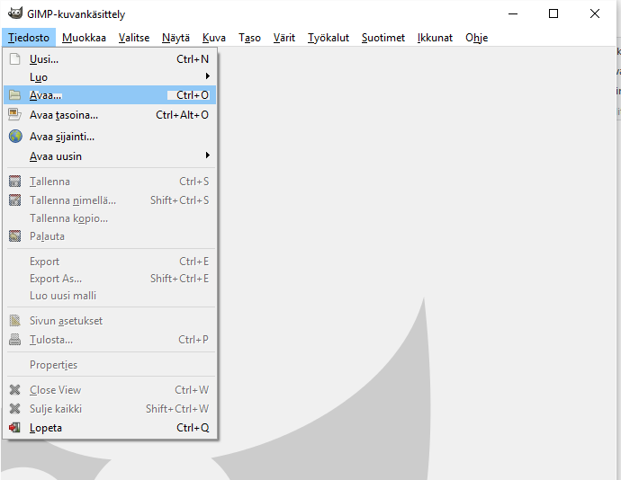
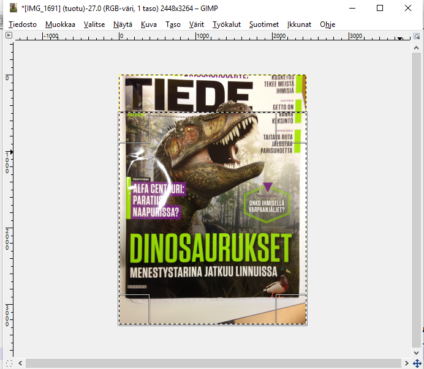

Oppimistehtävä 5 / TIE361 / Kuvankäsittelyn hyödyntäminen eri oppiaineissa
Alustus
Tehtävässä on tarkoitus pohtia kuvankäsittelyn hyödyntämistä eri oppiaineissa ja toteuttaa mallitehtävä ohjeistuksineen johonkin aineeseen. Valitsin tehtävän kohdeaineeksi äidinkielen.
Oppimistilanteen kuvaus
Tehtävässä on tarkoituksena valita joku lehti (esim. aikakauslehti/sanomalehti) ja tuottaa lehden etukannen otsikoista vapaamuotoinen kuvakollaasi. Tällä tavalla saadaan pelkät otsikot paremmin esiin verrattuna siihen, että otettaisiin kuva vain koko kannesta. Ja varsinkin isomman lehden tapauksessa yksittäiset otsikot jäisivät liian pieniksi, jos otettaisiin vain yksi kuva koko kannesta. Tarkoitus on myös pohtia lehden luonnetta otsikoiden perusteella ja analysoida otsikoita. Lopuksi tuotokset ja analyysit esitetään muille. Tehtävän voi tehdä yksin tai pareittain. Aikaa tuotoksen tekemiseen olisi hyvä varata 2 x 45 min ja esittämiseen kuluva aika riippuu ryhmän koosta.
Tavoitteet
Äidinkielen kannalta tehtävän oppimistavoitteet liittyvät seuraaviin OPS:in tavoitteisiin:
- T5: ohjata oppilasta kehittämään tekstien ymmärtämisessä, tulkinnassa ja analysoimisessa tarvittavia strategioita ja metakognitiivisia taitoja sekä taitoa arvioida oman lukemisensa kehittämistarpeita
- T6: tarjota oppilaalle monipuolisia mahdollisuuksia valita, käyttää, tulkita ja arvioida monimuotoisia kaunokirjallisia, asia- ja mediatekstejä
- T7: ohjata oppilasta kehittämään erittelevää ja kriittistä lukutaitoa, harjaannuttaa oppilasta tekemään havaintoja teksteistä ja tulkitsemaan niitä tarkoituksenmukaisia käsitteitä käyttäen sekä vakiinnuttamaan ja laajentamaan sana- ja käsitevarantoa
- T8: kannustaa oppilasta kehittämään taitoaan arvioida erilaisista lähteistä hankkimaansa tietoa ja käyttämään sitä tarkoituksenmukaisella tavalla
TVT:n kannalta tehtävän tavoitteet liittyvät seuraaviin OPS:ssa esitettyihin tavoitteisiin:
- Oppilaita ohjataan ymmärtämään tieto- ja viestintäteknologian käyttö- ja toimintaperiaatteita ja keskeisiä käsitteitä sekä kehittämään käytännön tvt-taitojaan omien tuotosten laadinnassa.
- Oppilaita opetetaan käyttämään tieto- ja viestintäteknologiaa tiedonhallinnassa sekä tutkivassa ja luovassa työskentelyssä.
- Oppilaat saavat kokemuksia ja harjoittelevat tvt:n käyttämistä vuorovaikutuksessa ja verkostoitumisessa.
Tehtävänanto
Valitse joku haluamasi lehti (esim. aikakauslehti tai sanomalehti). Kuvaa lehden etukannen otsikot ja tee niistä vapaamuotoinen kuvakollaasi (yksi kuvatiedosto).
Pohdi myös seuraavia asioita:
- Mitä saat irti lehden luonteesta otsikoiden perusteella?
- Mitä keinoja otsikoissa käytetään lukijan kiinnostuksen herättämiseksi?
- Onko kyseessä asialehti, viihdelehti vai molempia?
- Onko lehden tiedot luotettavia?
Tarkemmat ohjeet kuvankäsittelyyn
Ota kuvat esim. puhelimellasi ja siirrä ne koneelle (esim. usb-kaapelilla tai jonkun pilvipalvelun kautta). Tee kansio omalla nimelläsi (sukunimi_etunimi) ja tallenna kuvat sinne
Avaa GIMP (klikkaa käynnistä ja kirjoita hakukenttään "gimp".
Avaa gimp:ssä ensimmäinen kuva valitsemalla tiedosto -> avaa ja etsi kansiosi ja sieltä kuva.
Kannattaa jo tässä vaiheessa opetella käyttämään pikanäppäimiä yleisimpiin operaatioihin, joita tehtävässä tarvitaan:
| Operaatio | Näppäin/Näppäinyhdistelmä |
|---|---|
| Suorakulmiovalinta | R |
| skaalaus | shift+T |
| kopioi | ctrl+C |
| leikkaa | ctrl+X |
| liitä | ctrl+V |
| tallenna | ctrl+S |
| kierrä | shift+R |
| vapaavalinta | F |
| siirto | M |
On monta mahdollista tapaa lähteä tekemään kuvakollaasi ja tässä vinkkejä niistä yhteen:
Avaa ensimmäinen kuva, jonka päälle lähdet liittämään muita kuvia. Ota käyttöön suorakulmiovalinta ja valitse alue, jonka haluat kuvasta poistaa.
Seuraavaksi valitse muokkaa ja sieltä tyhjennä. Näin saat vain haluamasi osan jäämään kuvaan. Voit siirtää jäljelle jäänyttä kuvaa valitsemalla sen jollain valitsimella ja painamalla leikkaa ja liitä. Muista tallentaa tasaisesti!
Seuraavaa vaihetta toistetaan niin monta kertaa kuin haluat liittää uusia kuvia tämän ensimmäisen kuvasi päälle.
- Avaa uusi kuva.
- Valitse siitä alue, jonka haluat kopioida ja paina kopioi.
- Siirry alkuperäisen kuvasi ikkunaan ja paina liitä.
- Nyt voit siirtää, skaalata ja kiertää kuvaa haluamallasi tavalla.
Lopuksi valitse tiedosto ja export as ja nyt voit tallentaa kuvan eri muodoissa (esim. png tai jpeg). Valmistaudu esittämään pohdintasi ja kuvasi muulle ryhmälle.
Mallivastaus